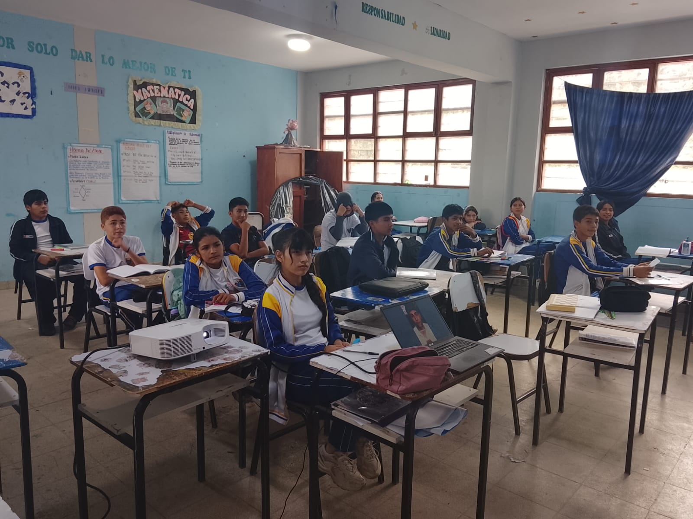
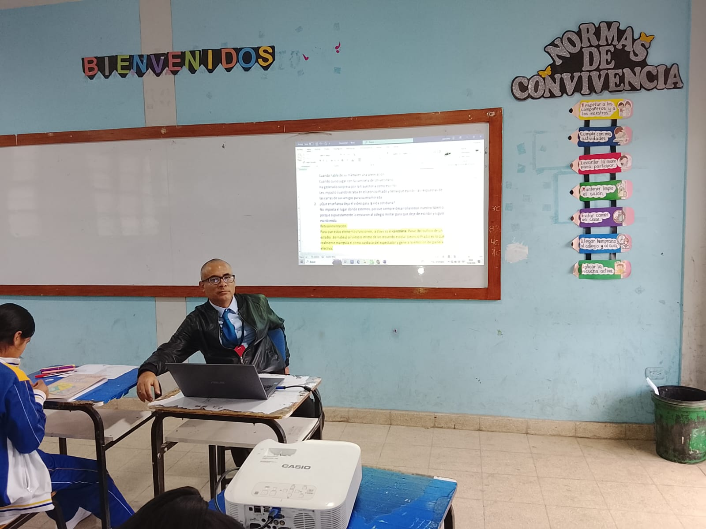
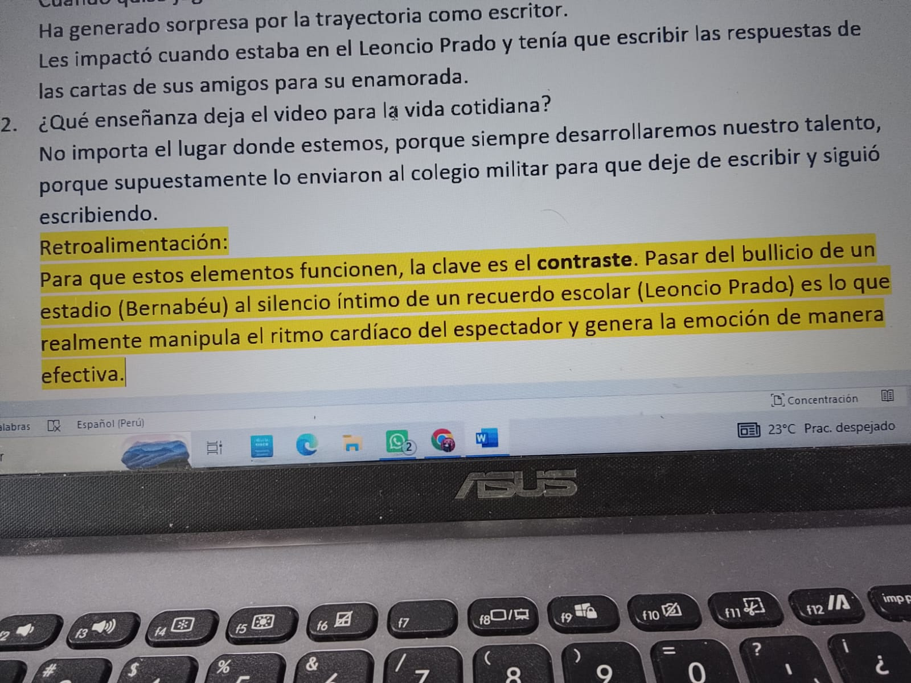
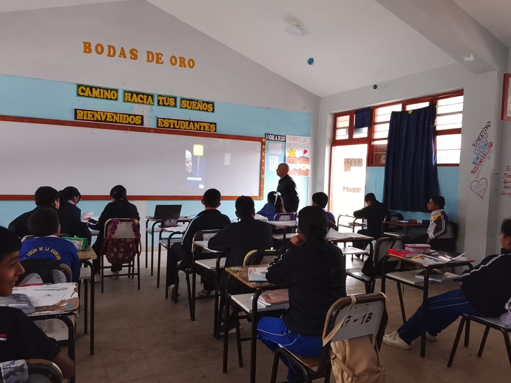
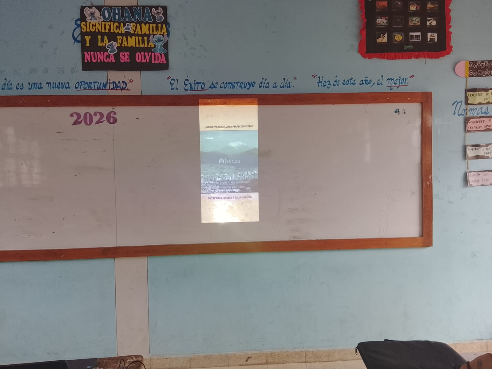
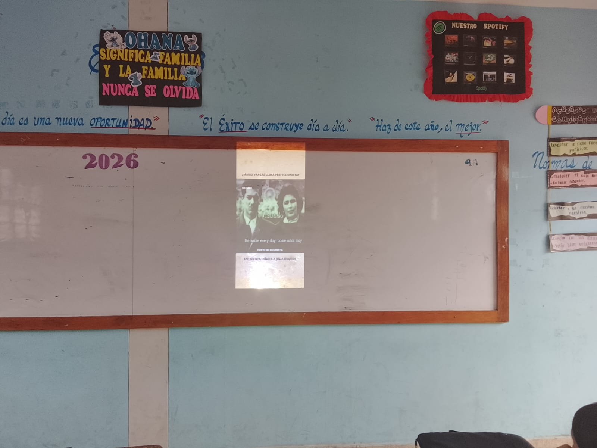

📘 Justificación del Plan Lector
La disminución de competencias lectoras a nivel internacional exige estrategias innovadoras en la educación secundaria.
Este proyecto integra videolectura y análisis de letras musicales para mejorar la comprensión, motivación y pensamiento crítico.






🎯 Fundamentación Pedagógica
La videolectura mejora la comprensión reduciendo la carga cognitiva.
Las letras musicales desarrollan análisis crítico y conexión cultural.
Los recursos audiovisuales aumentan la motivación y retención del aprendizaje.
📊 Aportes del Proyecto
- ✔ Mejora de la comprensión lectora
- ✔ Inclusión educativa
- ✔ Pensamiento crítico
- ✔ Innovación pedagógica
🔬 Enfoque Metodológico
Se integran estrategias tradicionales y digitales mediante videos, música y análisis crítico.
📚 Referencias
- Haavisto et al. (2025)
- Vidas et al. (2026)
- Parada-Cabaleiro et al. (2024)
- Van Zeijts et al. (2025)